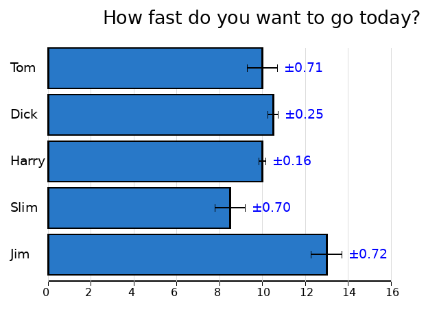
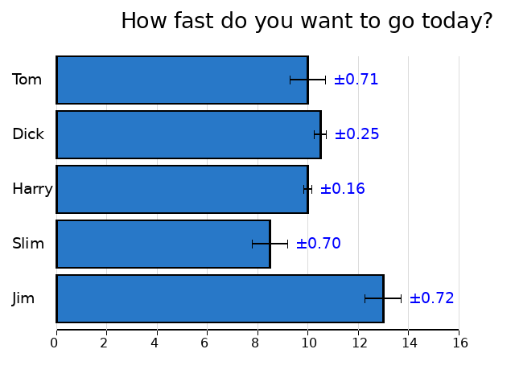
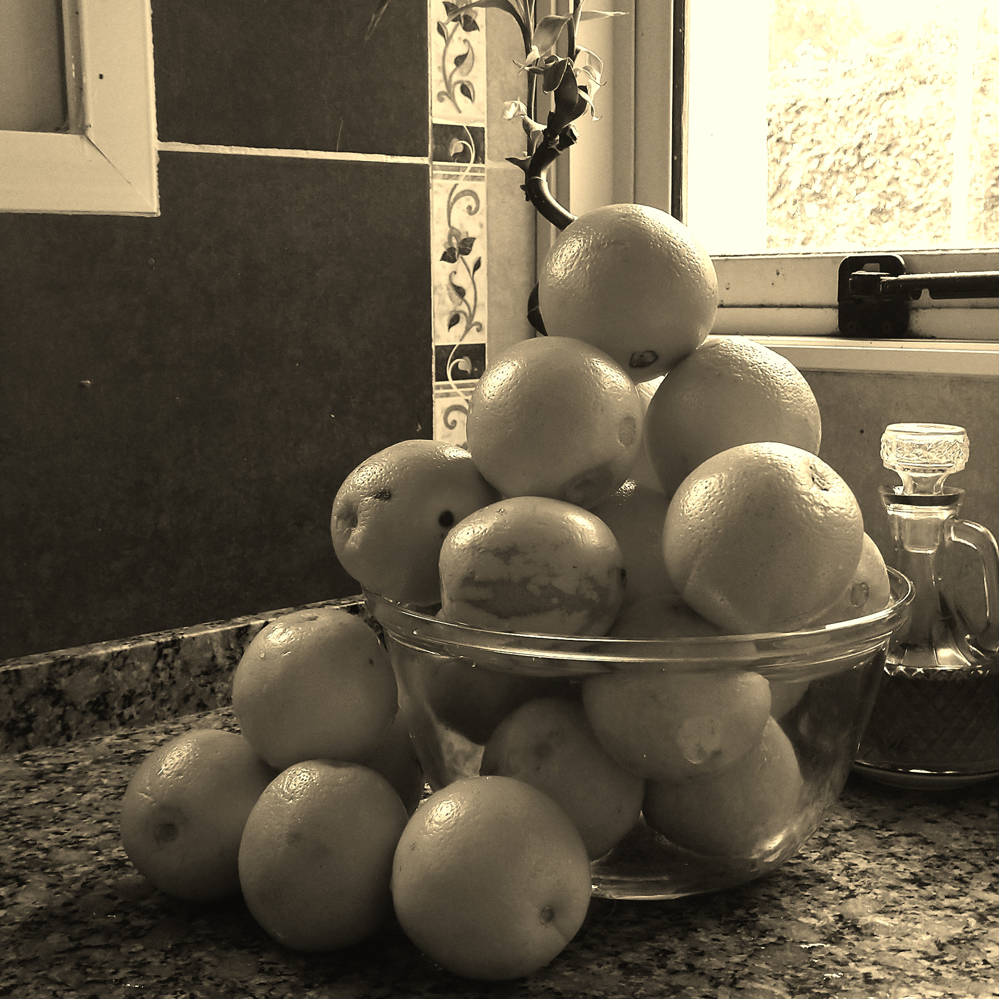
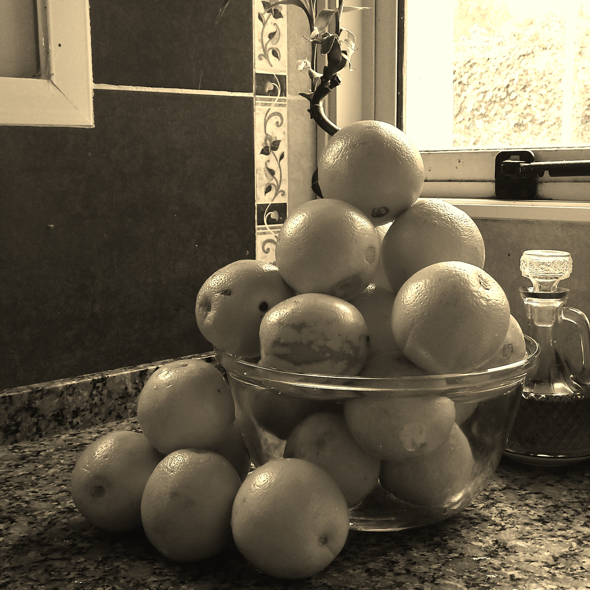
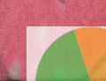
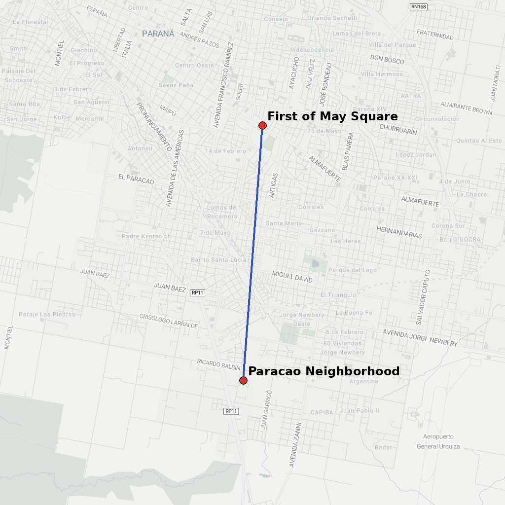
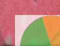
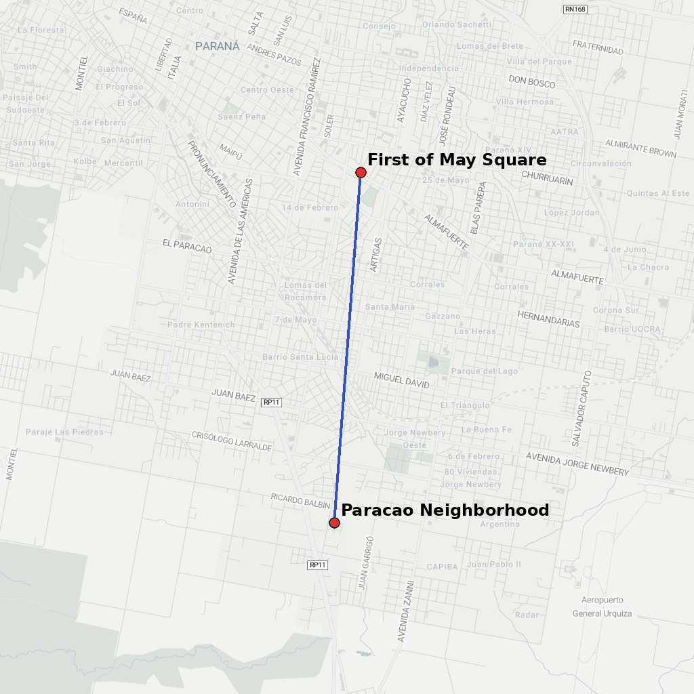

Ruby can create images again
ruby-libgd is a modern native Ruby binding to the GD Graphics Library — a fast, embeddable raster engine for charts, dashboards, GIS, and scientific graphics.
ruby-libgd is a modern native Ruby binding to the GD Graphics Library — a fast, embeddable raster engine for charts, dashboards, GIS, and scientific graphics.


 

 


 





Ruby lost its native graphics layer. ImageMagick is slow, fragile, and unsuitable for server-side rendering, map tiles, and dashboards.
ruby-libgd brings back a true raster engine: no external processes, no shelling out, full pixel control inside Ruby.
gem install ruby-libgdapt install -y libgd-dev pkg-config